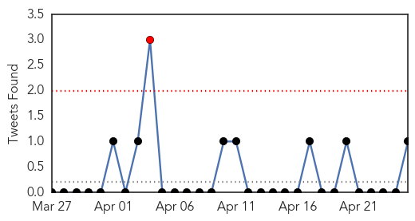

30 Day Trends
Web: 0 alerts, 10 warnings
Twitter: 0 alerts, 0 warnings
Top Articles:
Top Tweets:
- 0.893
- RT: WHO says epi situation in Guinea ebola outbreak is improving; four locations past 1 incubation period without a case h…
Web/News Articles

Tweets
Article Locations

Article Confidences